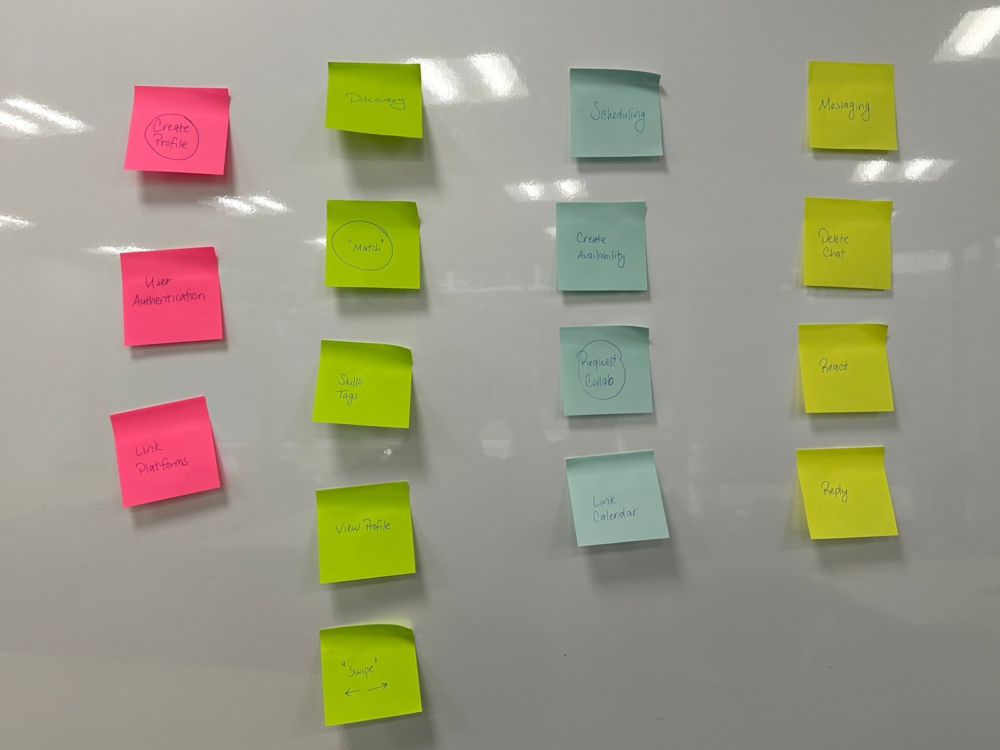
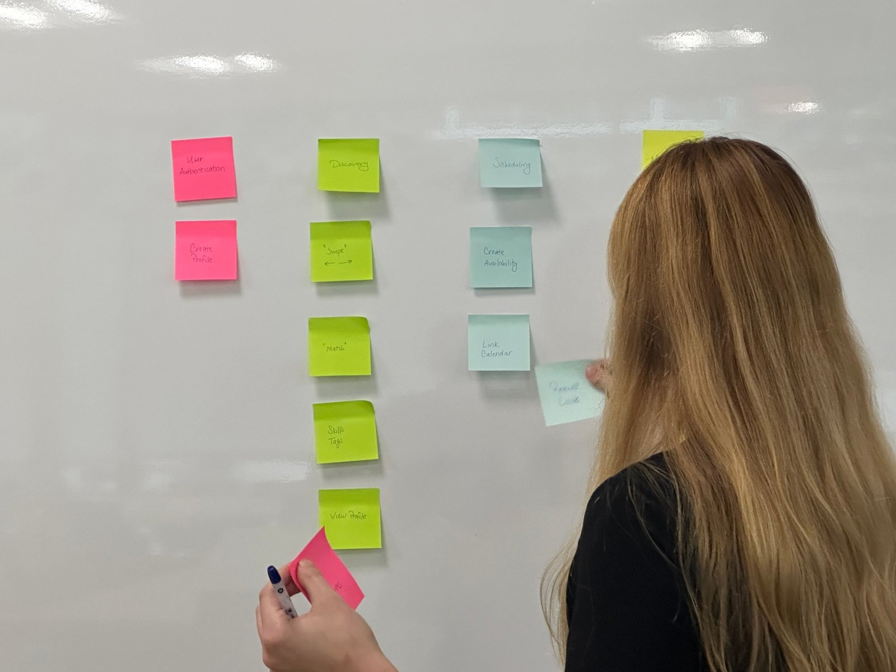
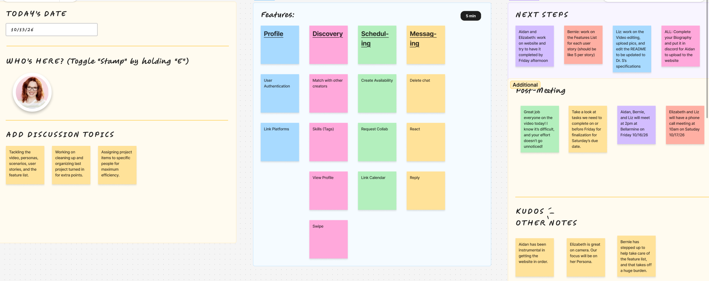

Listed from most to least important. Bold features are required for our minimum viable product (MVP): a verified creator can find another creator, message them and set up a collab. Report and block and Skills (tags) come right after.
Feature list
Feature 1: User authentication
Description
As a creator, I want to sign up and log in securely so that I can only manage my profile and conversations.
As a creator, I want to reset my password so that I can regain access if I forget it.
As a creator, I want to log out so that my account stays safe on shared devices.
Constraints
Passwords must be stored hashed. Logging in with a third-party account may depend on that platform's terms. Profile data that users share must be kept secure.
Comments
Based on Maya's and Derek's scenarios.
Feature 2: View profile
Description
As a small creator, I want to list my genres, time zone, and usual stream times on my profile so that compatible creators can find me.
As a creator, I want to read another creator's content style and community description so that I can tell if our chats will get along.
As a creator, I want to view another creator's profile before confirming a collab so that I know who I'm about to play with.
As a creator, I want to see whether the creator's content is family friendly so that I can protect my community.
As a creator, I want to read reviews from a creator's past collab partners so that I can spot problems before going live with them.
As a wellness creator, I want to see whether a creator's credentials are verified so that I know I'm working with someone credible.
As a creator, I want to edit my own profile so that it stays accurate.
As a collab organizer, I want to see a creator's reviews from past collab partners before inviting them so that I can choose reliable partners.
Constraints
Users must be able to control which profile details are public. Reviews and credential verification need a way to prevent fake reviews and fake credentials.
Comments
Based on Maya's, Derek's, and Rebecca's scenarios.
Feature 3: Link platforms
Description
As a creator, I want to see that another creator's Twitch account is verified so that I know who they say they are.
As a creator, I want to watch clips from a creator profile so that I know what kind of energy they have before I reach out to them.
As a creator, I want to share my gamertag in private with a group or person so that the invite can be sent before the stream.
As a creator, I want to unlink a platform so that I have control of what may appear on my profile.
Constraints
Platforms like Twitch, YouTube, TikTok, and Instagram have their own API rules and rate limits. Some may require approval before we can read account data. Gamertags must only be visible to people in the same group or person.
Comments
Based on Maya's, Derek's, and Marcus's scenarios.
Feature 4: Match with other creators
Description
As a small creator, I want to search for creators by genre, time zone, and audience size so that I find people at a similar stage to me.
As a beginning creator, I want to search for creators by niche so that I only see people who make health and wellness content.
As a creator, I want to be matched when another creator also shows interest in me so that we can start a conversation.
As a creator, I want to be notified of a new match so that I can respond quickly.
Constraints
Matching quality is limited by the number of creators using the app.
Comments
Based on Maya's and Rebecca's scenarios.
Feature 5: Reply
Description
As a shy creator, I want to send a short intro message that suggests a casual voice call so that getting to know someone feels low-pressure.
As an event organizer, I want a group chat for each event so that all communication stays in one place.
As a creator, I want to reply to a specific message so that the conversation stays clear.
Constraints
Messages must be delivered reliably and only to users who have matched or who share an event.
Comments
Based on Maya's scenarios.
Feature 6: Create availability
Description
As a part-time creator, I want to set my weekly availability on my profile so that other creators know when I can collab.
As a collab organizer, I want the app to split my available hours into fixed-length sessions so that I do not have to build the schedule by hand.
As a collab organizer, I want to set how many spots each session has so that the group size matches the game, such as trios.
As a creator with an unpredictable schedule, I want to post a looking-for-group (LFG) window for tonight so that I can find people to play with on short notice.
As a content creator, I want to state the time, platform, and whether it is family friendly in an LFG window so that I don't have to explain it to each person myself.
Constraints
Must handle different time zones.
Comments
Based on Derek's and Marcus's scenarios.
Feature 7: Request collab
Description
As a creator, I want to claim an open slot on someone's collab post so that I can join without a back-and-forth conversation.
As a collab organizer, I want to send a collab invite with the date, time, game, and purpose included so that busy creators can decide quickly.
As a creator, I want to send a skill-swap request that says what I'm offering and what I need so that the other creator understands the trade right away.
As a collab organizer, I want to see whether each invite has been seen, accepted, or declined so that I know where everyone stands.
As a collab organizer, I want the app to send an automatic reminder when someone has not answered an invite so that I do not have to chase them myself.
As a content creator, I want a separate inbox for collab invites so that I can keep DMs and collab invites organized.
Constraints
Depends on availability being created first. Collab invites should be kept in a separate inbox from messages.
Comments
Based on Derek's and Rebecca's scenarios.
Feature 8: Report and block
Description
As a content creator, I want to report a creator I have collabed with, with a reason and a timestamp, so that I can keep my community safer.
As a content creator, I want to block certain content creators so that they can no longer message me or see my availability.
As a content creator, I want to see the confirmation and outcome of my report so that I know it was received and acted on.
Constraints
Reports must be reviewed by a moderator. Blocking must hide the blocked creator from messages, availability and search.
Comments
Based on Maya's scenarios.
Feature 9: Skills (tags)
Description
As a creator, I want to add personality tags to my profile, such as "sarcastic" or "dark humor," so that people know what my content feels like.
As a creator, I want to add playstyle and etiquette tags to my profile, such as "mutes when not talking," so that others know what I'm like to play with.
As a creator, I want to list the skills I can offer on my profile so that others know what I can bring to a collab.
As a beginning creator, I want to filter creators by the skills they can help with, such as video editing, so that I can find someone who can teach me.
Constraints
Tags must come from a fixed list we make, or free-text tags must be moderated, so they follow community guidelines.
Comments
Based on Maya's, Marcus's, and Rebecca's scenarios.
Feature 10: Link calendar
Description
As a collab organizer, I want claimed slots to appear on my calendar and sync to Google Calendar so that I can see my week at once.
As a charity event participant, I want to export my slot to Google Calendar so that it shows up with the rest of my plans.
As a creator, I want to schedule a video call through the app's calendar so that we can agree on a time without messaging back and forth.
As a creator, I want my scheduled sessions to sync to Google Calendar so that I don't double-book myself.
Constraints
Requires calendar API permissions and user consent.
Comments
Based on Maya's, Derek's, and Rebecca's scenarios.
Feature 11: Reminders
Description
As a content creator, I want the app to remind my collaborators a week in advance about a collab so that they do not miss it.
As a collab member, I want a reminder before an event that shows the start time in my own time zone so that I show up at the right time.
As a participant, I want a confirmation and a reminder an hour before my slot so that I show up on time.
As a collab member, I want a reminder the day before my video is due so that I don't miss my posting date.
Constraints
Reminders must be sent in each person's own time zone.
Comments
Based on Maya's, Derek's, Marcus's, and Rebecca's scenarios.
Feature 12: Cancel and reschedule
Description
As an event organizer, I want to mark that I can't make it so that I don't have to message every player one by one.
As an event organizer, I want to choose whether to reschedule or let the group continue without me so that the group isn't left stuck.
As an event organizer, I want to open my spot to other players so that the group isn't a player short.
As a group member, I want to be notified automatically when someone cancels so that I know right away what is happening.
As a creator looking for a raid, I want to see open spots posted by other groups so that I can fill in on short notice.
As an event organizer, I want to suggest alternative times and let the group vote in the event chat so that we can pick a new time quickly.
Constraints
Every group member must be notified at once. Open spots should only be shown to creators who match the game and time.
Comments
Based on Marcus's scenarios.
Feature 13: Events and community days
Description
As an event organizer, I want to create a community day event with several time slots so that I don't have to sort people into groups by hand.
As an event organizer, I want to set how many players fit in each slot so that every group is the right size.
As an event organizer, I want a shareable web link for my event so that I can post it on Twitter and in my Discord.
As a viewer or smaller creator, I want to pick an open slot from the link without messaging the organizer so that I can join without a back-and-forth conversation.
As an event organizer, I want to see the full roster on my calendar so that I know who is in each slot.
Constraints
Slot booking must prevent overbooking. A shared link should only show open slots.
Comments
Based on Marcus's scenarios.
Feature 14: Swipe
Description
As a creator, I want to swipe through suggested creators so that I can quickly show interest or pass.
As a creator, I want to undo my last swipe so that an accidental pass does not lose a good match.
Constraints
Must work well on mobile phones and have a button alternative for accessibility.
Comments
Based on Maya's scenarios.
Feature 15: Feedback requests
Description
As a beginning creator, I want to post a feedback request in my niche's community space so that experienced creators can review my content.
As a creator, I want to upload draft videos and thumbnails privately so that only community members can see work I haven't published yet.
As a creator, I want to ask for feedback on specific things, such as color, fonts or my opening hook, so that the comments are useful.
As a creator giving feedback, I want to leave comments tied to a moment in a video so that the person knows exactly what I mean.
As a beginning creator, I want to save feedback into a style guide on my profile so that I can keep my posts consistent.
As a creator, I want to be notified when someone comments on my feedback request so that I can respond while it's still relevant.
Constraints
Draft uploads must only be visible to members of the community. Comments need moderation.
Comments
Based on Rebecca's scenarios.
Feature 16: Collab projects
Description
As a creator, I want to create a collab project and invite other creators so that we can plan a multi-day series in one place.
As a collab organizer, I want a shared posting calendar so that everyone knows which day each video goes live.
As a collab organizer, I want to assign filming and editing tasks to each creator so that it's clear who is responsible for what.
As a collab member, I want a shared folder for templates, fonts and colors so that our videos look consistent across all of our accounts.
As a collab organizer, I want to see which tasks are done so that I can follow up only when something is behind.
Constraints
Shared folders need storage limits and must only be open to project members.
Comments
Based on Rebecca's scenarios.
Feature 17: React
Description
As a creator, I want to react to a message with an emoji so that I can respond quickly without typing.
Constraints
Needs a limited emoji set for a first release.
Comments
Based on Maya's scenarios.
Feature 18: Delete chat
Description
As a creator, I want to delete a chat so that I can remove conversations I no longer need.
As a creator, I want to delete a single message I sent so that I can fix mistakes.
Constraints
The rules for deletion must be clear to both users, so whether a chat is removed for both people or only for the person who deletes it.
Comments
Based on Maya's scenarios.
Process pictures
Pictures from when we grouped our user stories into features.

Our features grouped on sticky notes: Profile, Discovery, Scheduling and Messaging.

Arranging the feature notes as we sorted our user stories.

The same feature groups as online sticky notes in a shared whiteboard tool.